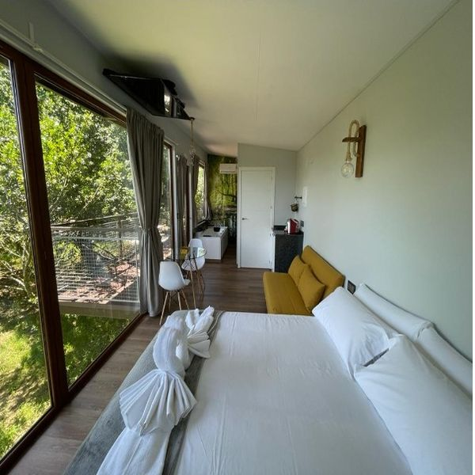

Cabaña Mónica: cabaña accesible con jacuzzi cerca de O Ézaro
Para 2 personas. A unos 2 metros del suelo, a la altura de las ramas de los árboles, con rampa de acceso. Cabaña accesible con jacuzzi interior de 180×90 cm, terraza cubierta, wifi y desayuno incluido.
👥 2 personas
Ver cabaña